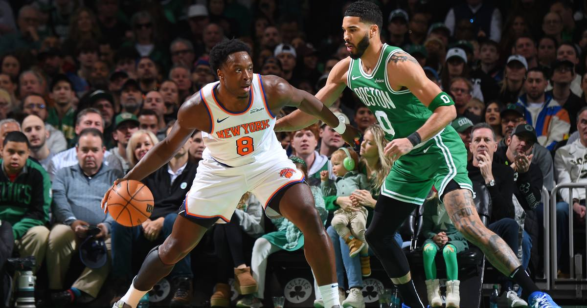

Knicks Visit the Celtics for Boston's Home Opener — Headliner of the First Full Night
Friday is the season's first full night with all 24 teams in action, and the headliner is Boston's home opener against the Knicks at 7 PM ET on Prime Video — both teams 0-1, both desperate to avoid 0-2.

Disclosure: this post contains affiliate links. I earn a commission on qualifying purchases.
Friday is the season's first full night of NBA basketball: all 24 teams in action, stretching from Bulls at Bucks at 4 PM ET to three West Coast tips at 10. (WhyNBA)
The headliner: Knicks at Celtics
The game of the night is Boston's home opener against the Knicks at 7 PM ET on Prime Video. Both teams sit at 0-1, both looking to avoid an 0-2 start. (NESN)
It's the champs' first road game of the season against a Boston team opening TD Garden — an early litmus test for both: are the opening-night stumbles a blip, or is this what the new season looks like for these rosters?
The full Friday slate
Twelve games tip across the evening:
4 PM ET: Bulls at Bucks
7 PM ET: Knicks at Celtics (Prime Video)
10 PM ET: Three West Coast tips
With every franchise playing, there's no slow ramp tonight — this is the season's first real sample size.
Watch
Source: "🏀 NBA OPENING WEEK 2026! 🔥 FULL SCHEDULE, BIG MATCHUPS & TIP-OFF TIMES" — BasketballSketch. A hand-drawn schedule breakdown of NBA Opening Week 2026 that flags Friday's Knicks-at-Celtics home-opener as one of the week's big matchups.
Rep your squad: Knicks championship gear and Celtics gear at Fanatics.
Gear up: Team gear/jerseys (Knicks, Celtics, opening-week merch) via Fanatics